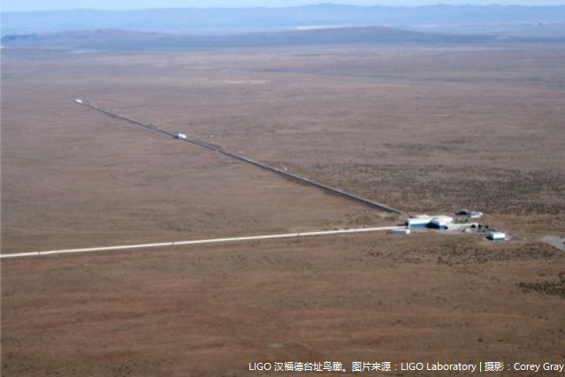
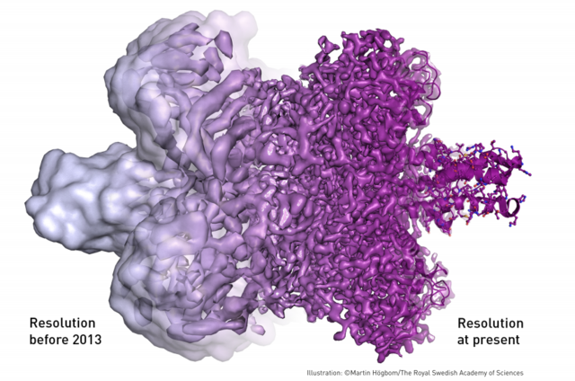
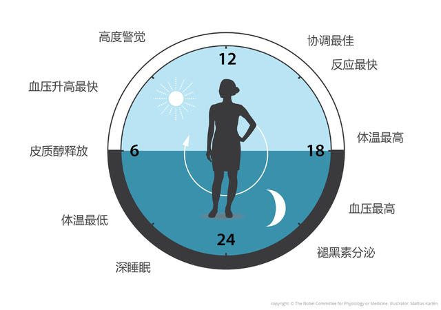
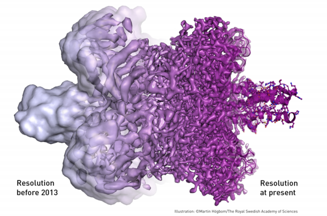
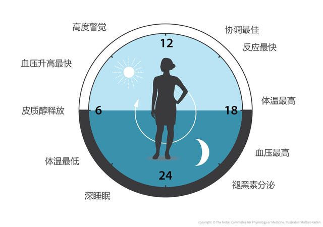
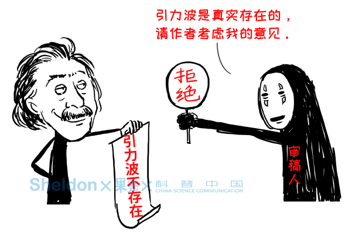
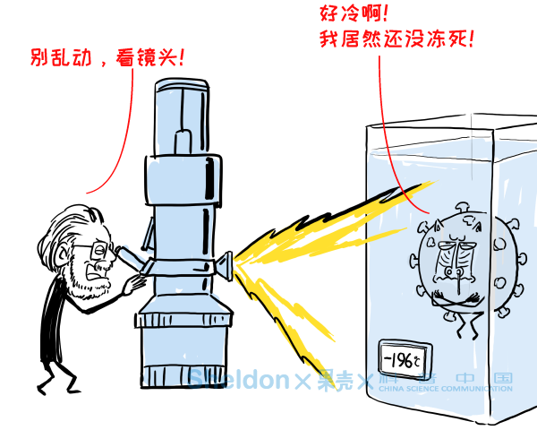
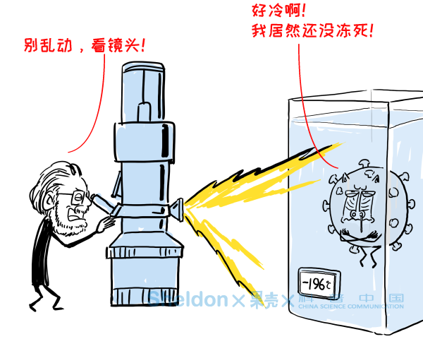

【2017诺贝尔奖】

【2017诺贝尔奖】物理奖：基普·索恩、雷纳·韦斯、巴里•巴里什，捕获引力波

【2017诺贝尔奖】化学奖：雅克·迪波什，约阿基姆·弗兰克 ，理查德·亨德森，和冷冻电子显微技术

【2017诺贝尔奖】生理学奖：杰弗理·霍尔、迈克尔·罗斯巴殊、迈克尔·杨，和昼夜节律的分子机制
【2017诺贝尔奖】物理奖：基普·索恩、雷纳·韦斯、巴里•巴里什，捕获引力波

【2017诺贝尔奖】化学奖：雅克·迪波什，约阿基姆·弗兰克 ，理查德·亨德森，和冷冻电子显微技术

【2017诺贝尔奖】生理学奖：杰弗理·霍尔、迈克尔·罗斯巴殊、迈克尔·杨，和昼夜节律的分子机制
【漫话2017诺贝尔奖】

【2017诺贝尔奖】漫画 | 物理什么的我不听，我要听引力波的10个八卦！

【2017诺贝尔奖】漫画 | 生物分子：伦家就想拍一张高清无码大图

【2017诺贝尔奖】漫画｜解读生理学奖，如何制造一台生物钟？
【2017诺贝尔奖】漫画 | 物理什么的我不听，我要听引力波的10个八卦！

【2017诺贝尔奖】漫画 | 生物分子：伦家就想拍一张高清无码大图
【2017诺贝尔奖】漫画｜解读生理学奖，如何制造一台生物钟？
【2017搞笑诺奖】
【2017搞笑诺奖】在巴西的洞穴里，他邂逅了真·女装大佬【2017搞笑诺奖】猫既可以是固态又可以是液态，这可能吗？
【2017搞笑诺奖】最好的播放胎教音乐的方法
【2017搞笑诺奖】人们到底多讨厌芝士？
【2017搞笑诺奖】吹管治打呼，维护世界和平！
【2017搞笑诺奖】觉得自己耳朵太大？不是因为你太高了，就是因为你太老了
图片版权见水印，网页源自果壳网